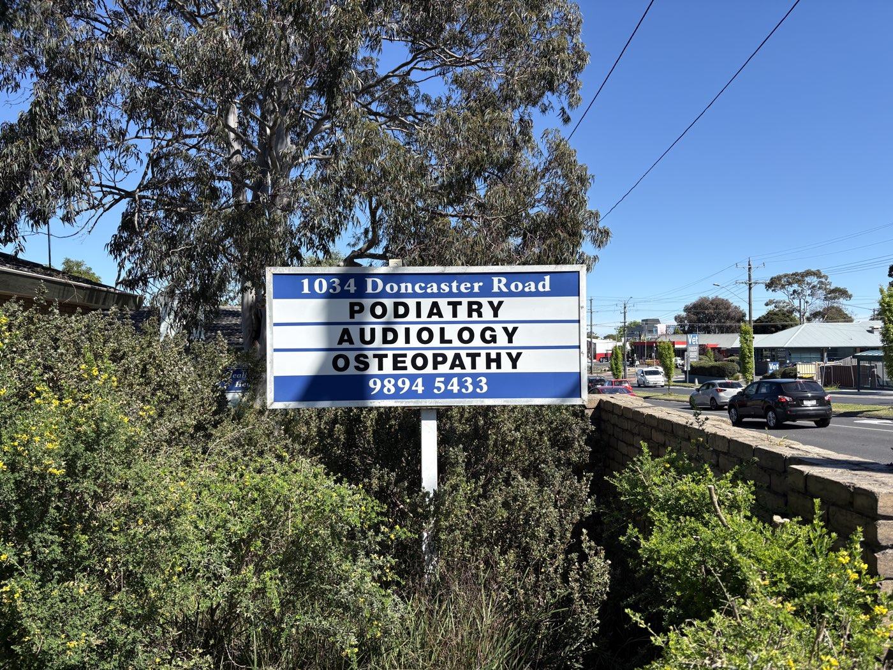

Locations and contact
Bookings for all three clinics are made through the Doncaster East number.
(03) 9894 5433-
Main clinic
Doncaster East
1034 Doncaster Road
Doncaster East VIC 3109Open 9:00 am to 5:00 pm, no lunch closure.
Wheelchair accessible, with off-street parking and plenty of street parking.
Open in Google Maps -
First Friday of the month, by appointment
East Melbourne
1st Floor, 166 Gipps Street
East Melbourne VIC 3002 Open in Google Maps -
Every Thursday, by appointment
Glen Waverley
Rear of Glenmount Medical Clinic
598 High Street Road
Glen Waverley VIC 3150Times can vary, so please book through the Doncaster East number.
Open in Google Maps

Finding the clinic
Look for the blue and white sign at 1034 Doncaster Road. The building is shared with other health practitioners, and the entrance is the glass door under the green awning. There is off-street parking, with plenty more on the street.
Send an enquiry
Leave your details and reception will call you back to find a time. If it is easier, call (03) 9894 5433.
Email billolayos@bigpond.com
Pensioners and veterans
Precision Acoustics is a Hearing Services Program provider. Have your pensioner concession or DVA card with you when you call.
GPs and referrers
Referrals are welcome at all three clinics. A report will normally go back to you after the visit, where appropriate.